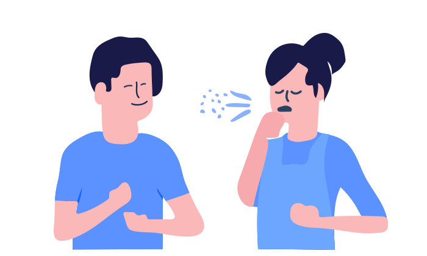

Stop COVID-19
How can we fight together against Coronavirus?
It’s never been more evident that we’re all global citizens, and we all have a part to play. The novel strain of Coronavirus has officially reached pandemic proportions.
Let's Fight


Think you might be affected?
Try symptom checker to find out what you need to do.

About the disease
Coronavirus (COVID-19)
COVID-19 is a new illness that can affect your lungs and airways. It's caused by a virus called Coronavirus, which has not been previously identified in humans. The disease was first identified in 2019 in Wuhan, the capital of Hubei, China, and has since spread globally, resulting in the 2019–2021 coronavirus pandemic.
Common signs of infection include respiratory symptoms, fever, cough, shortness of breath, and breathing difficulties. The disease can cause pneumonia, severe acute respiratory syndrome, kidney failure, and even death in more severe cases.
Standard recommendations to prevent infection spread include regular hand washing, covering mouth and nose when coughing and sneezing, thoroughly cooking meat and eggs. Avoid close contact with anyone showing symptoms of respiratory illness such as coughing and sneezing.
Worldwide Tracker
Confirmed Coronavirus Cases
Last updated:
Total Cases
Recovered
Total Deaths
New Cases


How Coronavirus is spread
Transmission of COVID-19
Person-to-person spread as close contact with infected.
Spread occurs between people who are in close contact (within about 6 feet for a cumulative total of 15 minutes or more over a 24-hour period) with one another.

Touching or contact with infected surfaces or objects.
A person can get COVID-19 by touching a surface or object with the virus on it and then touching their mouth, nose, or possibly their eyes.

Droplets that from infected person coughs or sneezes.
Spread occurs through respiratory droplets that come from the mouth or nose when an infected person coughs, sneezes, sings, or speaks.


Check yourself
Basic Symptoms
The most common symptoms of COVID-19 are fever, tiredness, and dry cough. Some patients may have aches and pains, nasal congestion, runny nose, sore throat, loss of smell, altered or lost sense of taste, or diarrhea. These symptoms are usually mild and begin gradually. Also, the symptoms may appear 2-14 days after exposure.
Symptom CheckerRecommend Self-isolation
If you start to feel sick or test positive for COVID-19, isolate yourself at home even if you are fully vaccinated.

High Fever
This means you feel hot to touch your chest or back (you do not need to measure your temperature). It is a common sign and also may appear in 2-10 days if you are affected.

Continuous Cough
This means coughing a lot for more than an hour, or three or more coughing episodes in 24 hours (if you usually have a cough, it may be worse than usual).

Difficulty Breathing
Around 1 out of every six people who get COVID-19 becomes seriously ill and develops difficulty breathing or shortness of breath.
Stay at home and call your doctor: If you think you have been exposed to COVID-19 and develop a fever and any symptoms, such as cough or difficulty breathing, call your healthcare provider as soon as possible for medical advice.

What you need to do
Take steps to protect
- Get vaccinated – visit VaccineFinder.org to find vaccination providers near you. Check your local pharmacy's website to see if vaccination appointments are available. Contact your state health department to find additional vaccination locations in the area.
- Stay home if you're sick – stay home if you are sick, except to get medical care.
- Cover your mouth and nose – with a tissue when you cough or sneeze (throw used tissues in the trash) or use the inside of your elbow.
- Wear a facemask if you are sick – You should wear a facemask when you are around other people (e.g., sharing a room or vehicle) and before you enter a healthcare provider's.
- Clean and disinfect frequently touched surfaces daily – this includes phones, tablets, light switches, doorknobs, countertops, handles, desks, toilets, faucets, and sinks. If possible, dedicate a lined trash can for the ill person. Use gloves when removing garbage bags and handling & disposing of trash.
- Stay informed about the local COVID-19 situation – get up-to-date information about local COVID-19 activity from public health officials.


Maintain social distancing
Maintain at least 2 meters (6 feet) distance between yourself & anyone who is coughing or sneezing. If you are too close, get a chance to be infected.

Soap on Hand
Regularly and thoroughly clean your hands with an alcohol-based hand rub or wash them with soap and water for at least 20 seconds.
1
Apply soap and rub your hands together
2
Use one hand to rub the back of the other hand and vice versa
3
Rub your hands together and clean between your fingers
4
Rub the back of your fingers against your palms
5
Rub your thumb using your other hand and vice versa
6
Rub your tips of your fingers on the palm of your other hand and vice versa

Be careful and stay safe
Know Your Treatment Options
The FDA has approved the antiviral drug Veklury (remdesivir) for adults and certain pediatric patients with COVID-19 who are sick enough to need hospitalization. Veklury should only be administered in a hospital or in a health care setting capable of providing acute care comparable to inpatient hospital care.
The FDA continues to work with developers, researchers, manufacturers, the National Institutes of Health, and other partners to help expedite the development and availability of therapeutic drugs and biological products to prevent or treat COVID-19. To check whether FDA approves a drug, search the database of approved medications by visiting the Drugs@FDA database.
Self Care
If you have possible or confirmed COVID-19:
- Stay home except to get medical care.
- Monitor your symptoms carefully. If your symptoms get worse, call your healthcare provider immediately.
- Get rest and stay hydrated. Take over-the-counter medicines, such as acetaminophen, to help you feel better.
- If you have a medical appointment, notify your healthcare provider ahead of time that you have or may have COVID-19.
- Stay in a specific room and away from other people in your home. If possible, use a separate bathroom. If you must be around others, wear a mask.
For informational purposes only. Consult your local medical authority for advice. Learn more on cdc.gov
Medical Treatments
To relieve symptoms and support your body’s natural defenses:
- Taking medications, like acetaminophen or ibuprofen, to reduce fever.
- Drinking water or receiving intravenous fluids to stay hydrated.
- Getting plenty of rest to help the body fight the virus.
For informational purposes only. Consult your local medical authority for advice. Learn more on cdc.gov
Subscribe our newsletter
Join our subscribers list to get latest news and updates about COVID-19 delivered directly in your inbox.
Subscribe Now
* By signing up, you agree to our Privacy Policy.